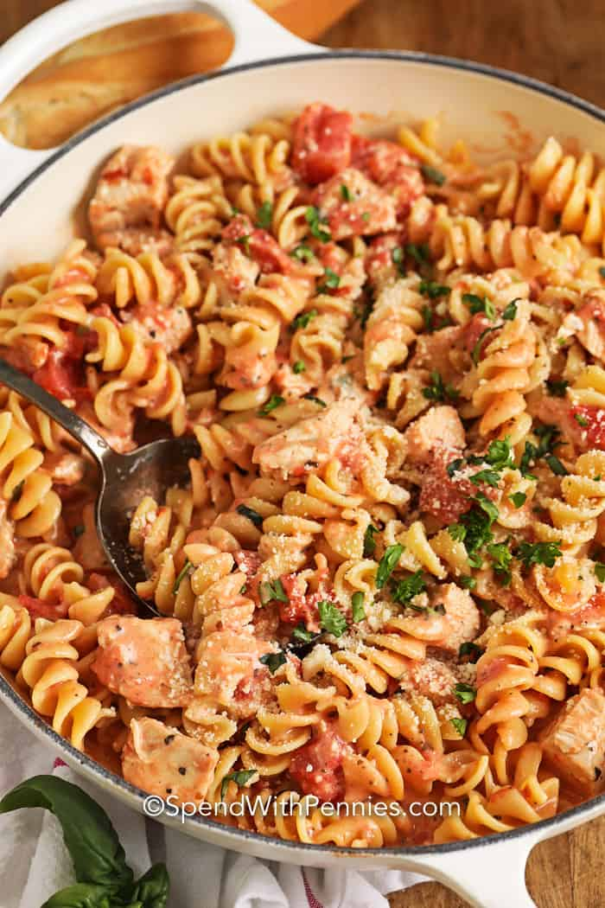

How to make pasta very quickly
Ingredients
- Red Bell Pepper
- Green Bell Pepper
- Yellow Bell Pepper
- Uncooked pasta
- 1 cup Milk
- Cheese (optional)
- Butter
- Oregano
- Chilli Flakes
- Black Pepper
Steps
- Boil the uncooked pasta
- - Make sure to save the leftover water
- When pasta expands and feels fluffy, continue
- Cut the bell peppers into small pieces
- Put butter in a pan
- Heat it up
- Wait for the butter to completely melt
- Put in the cut up bell peppers
- Mix them for around 3 minutes
- Pour the milk little by little
- - Also pour the pasta water in at this step
- Add some oregano, chilli flakes, and black pepper
- Stir for a little bit until sauce starts to boil
- Add in the boiled pasta
- Mix it
- Once sufficiently mixed, pasta is ready to eat!
